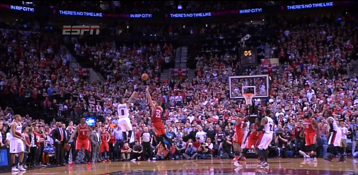
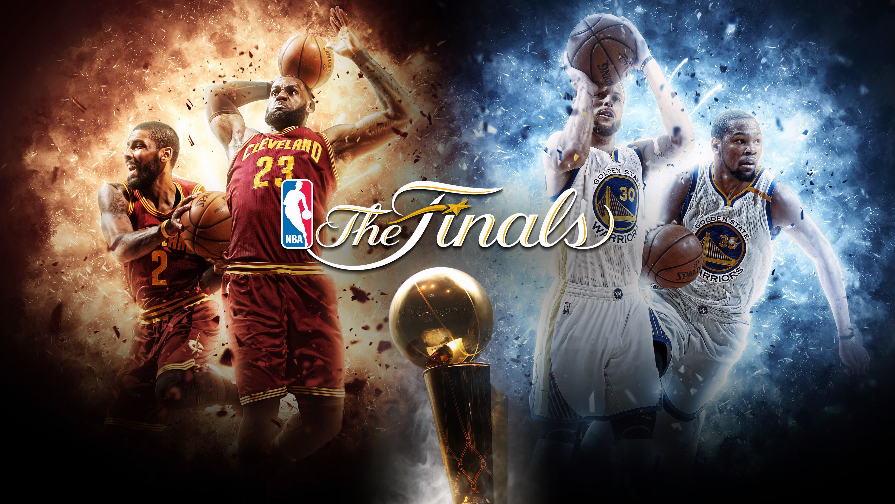

| Home | NBA Playoffs | Statistics | NBA Offseason |
|---|
The NBA playoffs are where the top 8 teams of each conference play to advance to the championship round to ultimately win the NBA Championship. This is also where teams are the most hyped up and fan bases grow, as if a team is doing well people tend to bandwagon with the team and start to cheer for them. Majority of the time, the finals is made of the 2 best teams of each conference but of course, occasionally the underdogs make it and throws everyone off. In addition each series is 7 games which means to upset a team you not only need to do it once you must do it 4 times before they beat you 3 times, which makes winning as the underdog even more impressive when it happens. Unfortunately for the fans who are fans of teams that seem to never get past their respective conference finals, underdogs very rarely make it due to the amount of superteams now in the league. It almost seems as if nowadays its always Warriors vs Cavaliers, at least back in the 90s it was Jordan's bulls and some other Western conference team which switched it up a bit. The playoffs are also a time where the intensity picks up and many amazing moments are made, whether is a game winner or a crazy dunks emotions are high and any little thing can shift momentum and change the outcome of the series.
How the playoffs work is that 16 teams, 8 teams from each conference play each other to decide who represent each conference in the finals. Reaching the finals is a goal for each and every team, but the ultimate goal is to win the championship. How the system works is that teams with the best standings are ordered from 1-8 in each conference, and how it works is that the first seed of the conference faces off against the eight seed of the conference, second seed against seventh seed, third seed against sixth seed and fourth seed against the fifth seed. This system is incorporated so that teams have a general idea of who they're gonna play against and the bes preforming regular season teams are rewarded by playing the worst preforming regular season team that were able to make top 8 in their conference. If you want more detail on how the playoff brackets work you can click here .
| References |